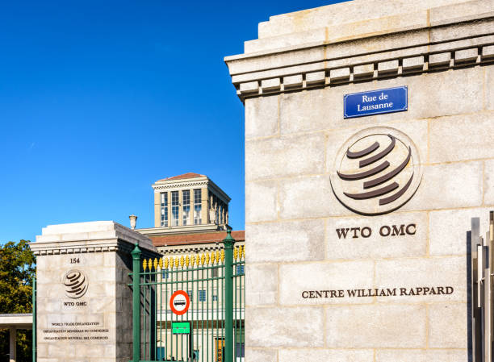
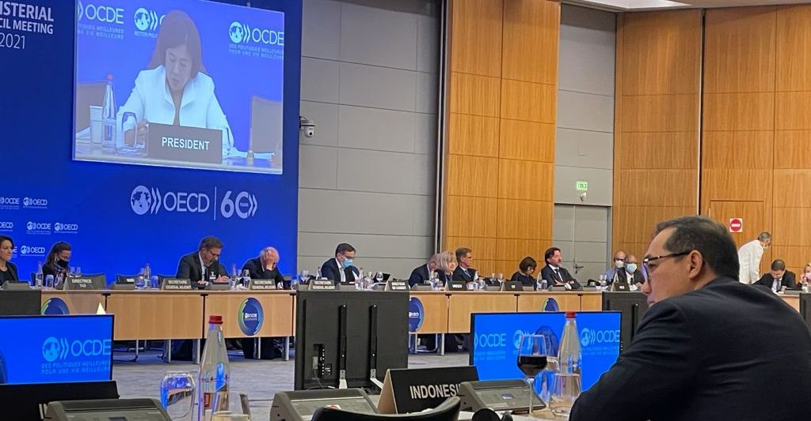

KERJASAMA MULTILATERAL: WTO
- World Trade Organization (WTO) adalah organisasi internasional yang dibentuk pada tahun 1995 untuk mengatur perdagangan antarnegara. WTO bertujuan untuk menciptakan sistem perdagangan yang adil dan terbuka, sehingga negara-negara dapat saling berdagang dengan lebih mudah. Organisasi ini memiliki 164 negara anggota yang bekerja sama untuk mengurangi hambatan perdagangan, seperti tarif dan kuota, agar semua negara dapat menikmati manfaat dari perdagangan internasional.
- Salah satu tujuan utama WTO adalah untuk meningkatkan perdagangan global dengan cara menciptakan aturan yang jelas dan dapat diterima oleh semua negara. WTO membantu negara-negara dalam menyelesaikan sengketa perdagangan dan memastikan bahwa semua pihak mematuhi perjanjian yang telah disepakati. Selain itu, WTO juga memberikan bantuan teknis dan pelatihan kepada negara berkembang agar mereka dapat berpartisipasi dengan lebih baik dalam perdagangan internasional. Kerja sama antarnegara sangat penting di WTO, karena perdagangan yang sukses membutuhkan kolaborasi dan pemahaman antarnegara.
- Indonesia berperan aktif dalam WTO dengan menjadi salah satu anggota yang mendukung kebijakan perdagangan yang adil. Indonesia terlibat dalam perundingan untuk mengurangi tarif dan memperbaiki akses pasar bagi produk-produk dari negara berkembang. Selain itu, Indonesia juga berusaha untuk melindungi produk lokalnya dari praktik perdagangan yang tidak adil, seperti dumping atau subsidi yang merugikan. Dalam forum WTO, Indonesia menyuarakan kepentingan negara-negara berkembang dan berkontribusi pada kebijakan yang mendukung pertumbuhan ekonomi yang berkelanjutan. Dengan berpartisipasi aktif, Indonesia berharap dapat memanfaatkan peluang perdagangan global sambil melindungi kepentingan ekonominya.
 